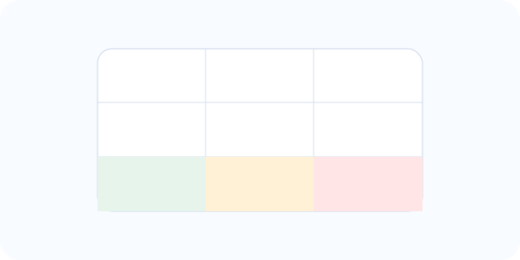

📊 Évaluation de la Criticité d'un Danger HACCP
Cet outil permet de calculer automatiquement le score de criticité d'un danger identifié dans votre analyse HACCP selon la formule : Criticité = Fréquence × Gravité × Maîtrise
💡 Méthodologie : Cette évaluation vous aide à déterminer si un danger doit être considéré comme un CCP (Point Critique de Contrôle), un PRPo (Programme Prérequis Opérationnel) ou un PRP (Programme Prérequis de base).
Contexte métier
🔬 Évaluation du Danger
Résultat de l'Analyse
-
-
- Fréquence : -
- Gravité : -
- Maîtrise : -
📋 Interprétation Réglementaire
-
💡 Justification Technique
-
✅ Recommandations d'Actions
-
📊 Grille de Classification
| Score | Classification | Action |
|---|---|---|
| 15 à 27 | CCP CRITIQUE | Surveillance renforcée obligatoire + Limites critiques + Actions correctives documentées |
| 8 à 14 | POINT SENSIBLE (PRPo) | Surveillance régulière + Mesures de maîtrise spécifiques + Enregistrements |
| 1 à 7 | DANGER MAÎTRISÉ (PRP) | Bonnes Pratiques d'Hygiène (BPH) suffisantes + Surveillance de routine |